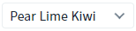
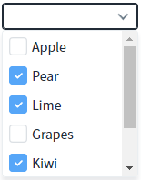
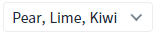
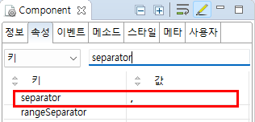

[CheckCombobox] 선택된 항목 출력하기 - 구분자 설정
1개요
CheckCombobox의 'separator' 속성을 사용하여, 선택된 항목의 구분자를 설정한 예제입니다. 이 속성의 기본 값은 ' '(공백)입니다.
2구현된 기능
(기본 설정) 선택된 항목의 구분자가 ' '(공백)인 경우
선택된 항목의 구분자가 ','(쉼표)인 경우
3예제 테스트 방법
목록에서 항목을 선택하고, 선택된 항목간의 구분자를 비교합니다.
3.1(기본 설정) 선택된 항목의 구분자가 ' '(공백)인 경우
예제 영역 '(기본 설정) 선택된 항목의 구분자를 " "(공백)으로 설정'에 구성된 CheckCombobox에서 테스트합니다.
1
STEP 1: 목록에서 'Pear', 'Lime', 'Kiwi' 항목을 선택합니다.
Image 1.브라우저(Chrome) 실행 예시 - 항목 선택 예시

2
STEP 2: 선택된 항목의 출력 값을 확인합니다.
선택된 항목이 기본 구분자인 공백으로 표시됩니다.
선택된 항목 출력 예시) 'Pear Lime Kiwi'
Image 2.브라우저(Chrome) 실행 예시 - 선택된 항목 예시

3.2선택된 항목의 구분자가 ','(쉼표)인 경우
예제 영역 '선택된 항목의 구분자를 ","(쉼표)로 설정'에 구성된 CheckCombobox에서 테스트합니다.
1
STEP 1: 목록에서 'Pear', 'Lime', 'Kiwi' 항목을 선택합니다.
Image 3.브라우저(Chrome) 실행 예시 - 항목 선택 예시]

2
STEP 2: 선택된 항목의 출력 값을 확인합니다.
선택된 항목이 ', '로 구분하여 표시됩니다.
선택된 항목 출력 예시) 'Pear, Lime, Kiwi'
Image 4.브라우저(Chrome) 실행 예시 - 선택된 항목 예시

4구현 예시
4.1선택된 항목의 구분자 설정하기
1
컴포넌트의 속성을 정의합니다.
[필수] separator=", "
[default:" "(빈 공백)] 선택된 항목들이 여러 개인 경우 구분자로 사용할 문자를 정의합니다.
Image 5.웹스퀘어 스튜디오의 Component View - 속성 설정 예시

Example 1.CheckCombobox의 소스 본문 예시
<xf:checkcombobox separator=", "> <!-- 중략 --> </xf:checkcombobox>
5주요 API
separator